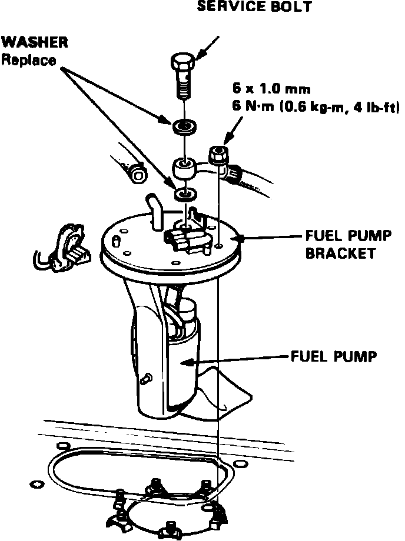

Fuel Pump: Service and Repair
Fig. 1 Relieving fuel system pressure:

1. Disconnect battery ground cable, then relieve fuel system pressure by loosening the service bolt on top of fuel filter, Fig. 1, one complete revolution.
Fig. 43 Fuel pump replacement. Legend:

2. Remove fuel pump access cover from luggage compartment.
3. Disconnect fuel lines and electrical connector from fuel pump.
4. Remove fuel pump mounting nuts and the fuel pump, Fig. 43.
5. Reverse procedure to install.